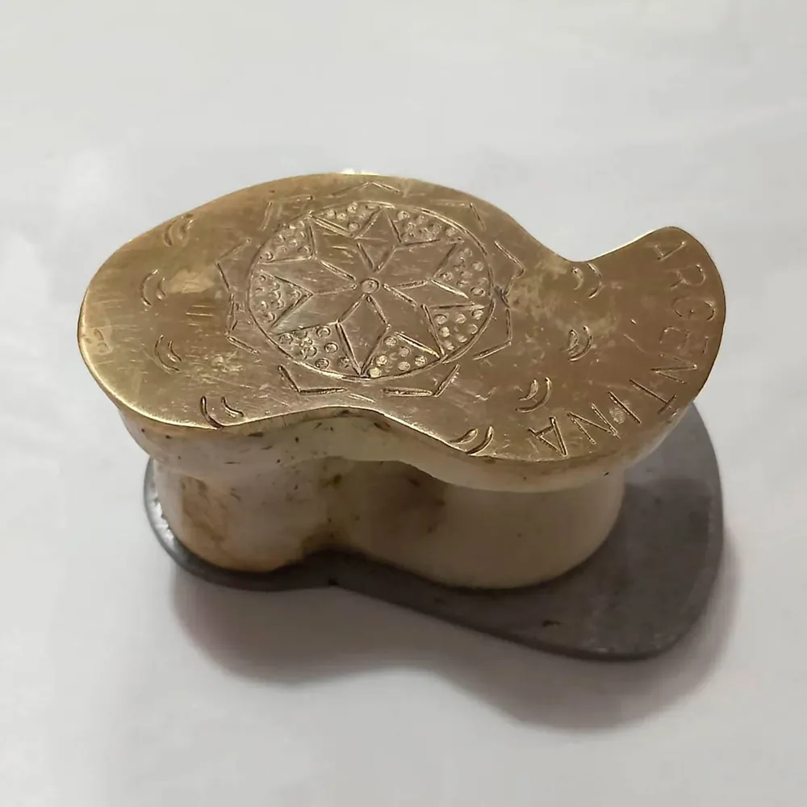
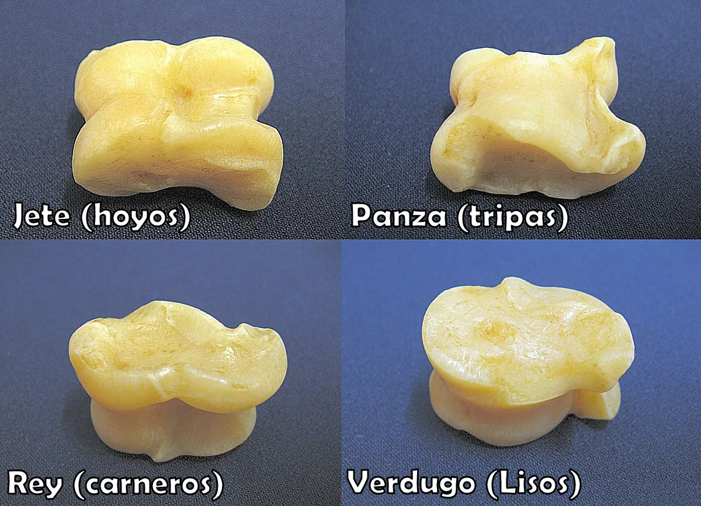
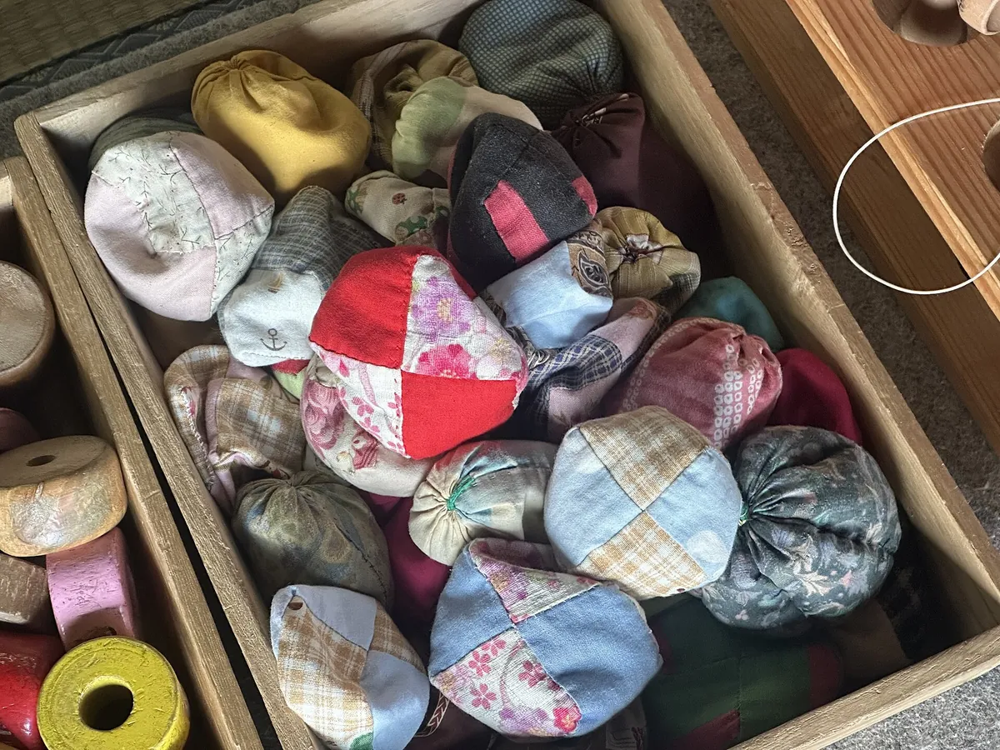

França
Osselets
Joc d’habilitat amb cinc peces: el père (o reine), que es llança, i quatre fils. Té figures molt difícils, com la balayette, l’omelette o la tête de mort, i s’hi han documentat partides de milers de punts.
Mirada comparada
El joc de les tabes és universal. Comparar-lo amb el d’altres cultures ajuda a veure què és comú (un os irregular que cau en quatre posicions) i què canvia (els noms, les regles, els valors i fins i tot el material).
Base cartogràfica: © OpenStreetMap. Fes clic als punts per llegir-ne la descripció.
Mongòlia
A Mongòlia el joc amb astràgals d’ovella o de cabra és una tradició viva, molt lligada a la identitat dels pastors nòmades. Les cares no tenen noms de càrrecs ni de forats, sinó d’animals del ramat:
N’hi ha prop d’un centenar de jocs: la «cursa de cavalls», en què es fan avançar els astràgals per un circuit, la «tortuga multicolor», amb 108 peces… El tir a l’astràgal (shagai kharvaa), que es practica durant el festival del Naadam, és patrimoni cultural immaterial de la UNESCO des del 2014. Treure les quatre cares diferents es considera un presagi de bona sort.


Con Sud americà
A l’Argentina, l’Uruguai, el sud del Brasil (jogo do osso) i la Patagònia xilena, el joc va arribar amb la colonització hispànica i es va transformar. No es juga amb ossets d’ovella, sinó amb l’astràgal d’un bou o d’una vaca, de 4 a 6 cm, i és un joc d’aposta d’adults vinculat a la cultura dels gautxos.
La taba es llança des d’uns quants metres sobre una franja de terra tova i humida, el queso. Per protegir-la i perquè soni, sovint es reforça amb plaques de bronze o de ferro. Si cau amb la cara convexa a dalt, és suerte i es guanya; si cau amb la còncava, és culo i es perd. Si queda clavada dreta, és pinino i el premi es multiplica.



Jocs germans
França
Joc d’habilitat amb cinc peces: el père (o reine), que es llança, i quatre fils. Té figures molt difícils, com la balayette, l’omelette o la tête de mort, i s’hi han documentat partides de milers de punts.

Rússia
A la Rússia rural, els nens jugaven amb astràgals a les babki, com mostra aquesta pintura de Vladímir Makovski (1870).

Península Ibèrica
A Castella i Lleó les cares es diuen hoyo, panza, rey i verdugo, molt semblants a les catalanes. A l’Aragó, la tripa passa el torn i el verdugo castiga. Al País Basc, es diu txoko, tortoloxak o azurrak.

Món anglosaxó
Es diu knucklebones, fivestones o jacks. A Austràlia, els infants bullien i tenyien ossos d’ovella. Les versions industrials de metall o de plàstic es juguen fent botar una pilota, amb nivells com onesies, twosies o clicks.

Corea
Abans es jugava amb cinc pedres i ara, amb peces petites de plàstic. Té cinc nivells de dificultat i és molt popular als patis de les escoles. Pintura de Yun Deok-hui (s. XVIII).

Japó i Singapur
En lloc d’ossos, s’hi fan servir bossetes de tela farcides de grans, d’arròs o de sorra, que es llancen i s’atrapen. A Turquia es juga al beş taş («cinc pedres») i a l’Índia, a l’anju kal.
Comparació
| Lloc | Nom | Material | Tipus de joc | Qui hi jugava |
|---|---|---|---|---|
| Catalunya | tabes, ossets, marraquinca | astràgal d’ovella o de cabra | habilitat, rols i atzar | infants |
| França | osselets | os de xai, metall, plàstic | habilitat i punts | infants |
| Mongòlia | shagai | astràgal d’ovella o de cabra | atzar, endevinació, tir | infants i adults |
| Con Sud | taba, jogo do osso | astràgal de bou amb metall | llançament i aposta | homes adults |
| Corea, Japó… | gonggi, otedama | pedres, plàstic, bossetes | habilitat | infants |
L’arrel comuna és el món grec i romà. A Grècia, el joc d’habilitat amb cinc peces es deia pentalitha («cinc pedres»), com els jocs asiàtics actuals.